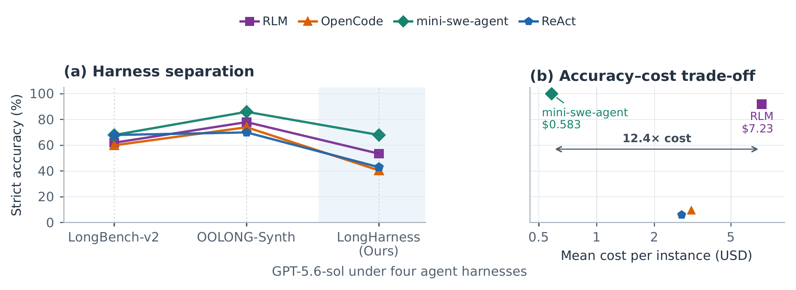

Why LongHarness
Accuracy alone hides how a harness handles context.
Modern harnesses extend language models with search, context slicing, tool use, and additional model calls. Existing benchmarks often reveal little about whether those mechanisms are being used strategically.
LongHarness combines dense, confusable evidence with reasoning paths that change as intermediate results are recovered. Multiple strategies can succeed, but their token and monetary costs differ sharply.
Harness separation
LongHarness reveals harness differences that existing benchmarks hide.
LongHarness reveals bigger differences between harnesses and shows that similar accuracy can come at a dramatically different cost.

Macro-average accuracy
Percent across the four LongHarness task suites. Best result in bold.
| Model | Direct Reading | RLM | OpenCode | mini-swe-agent | ReAct |
|---|---|---|---|---|---|
| GPT-5.6-sol | 60.0 | 53.5 | 40.5 | 68.0 | 43.0 |
| GLM-5.3 | 9.5 | 27.0 | 38.0 | 42.5 | 13.0 |
| Qwen3.8-27B | 0.0 | 7.5 | 38.5 | 33.0 | 0.0 |
| Gemini 3.8 Flash | 10.0 | 10.5 | 11.5 | 25.0 | 21.0 |
| Kimi-K2.6 | 0.0 | 0.5 | 1.5 | 0.5 | 0.0 |
Benchmark design
LongHarness combines properties that existing benchmarks cover only partially.
| Evaluation property | LongBench-v2 | HELMET | LongProc | OOLONG | LongHarness |
|---|---|---|---|---|---|
| Diverse, adaptive retrieval demand | ~ | ~ | × | × | ✓ |
| Semantically confusable evidence | × | ✓ | ~ | ~ | ✓ |
| Extensive reasoning steps | × | × | ✓ | ✓ | ✓ |
| Step-dependent retrieval | × | × | ✓ | × | ✓ |
| Multiple strategies with different costs | × | ~ | × | ~ | ✓ |
| Wide range of SoTA system accuracy | × | × | × | × | ✓ |
| Wide range of SoTA system cost | × | × | × | ~ | ✓ |
Adaptive retrieval means choosing among lexical search, semantic retrieval, and direct reading as information needs change. Step-dependent retrieval means intermediate findings determine what must be retrieved next. The final two rows report whether model–harness configurations are widely separated in accuracy and cost.
Four task suites
Different context access strategies expose different harness strengths.
Every suite contains 50 instances with deterministic exact-match evaluation and contexts near the 128K-token range.
Constraint Solving Search
Find every person satisfying three to five conditions using facts scattered across varied documents. Near-matches satisfy all but one condition, and the most selective condition is not identified.
- Context
- ~2,400 documents about 160 people
- Answer
- 5 person IDs
- Strategy
- Narrow, then verify

Equivalent Program Pair Search
Recover every functionally equivalent pair among anonymous Python programs. True pairs can look different, while nearby mutants share surface structure but diverge on boundary behavior.
- Context
- 200 programs
- Answer
- 5 unordered pairs
- Strategy
- Cluster, then distinguish

Program Execution Tracing
Follow an eight-step dependent query through shuffled records of prior computations. Each recovered output determines what must be found next, and one incorrect match redirects the remaining trace.
- Context
- 320 code cells
- Answer
- Final result + 8 supporting cell IDs, one per query step
- Strategy
- Retrieve, verify, reuse

Outlier Memo Detection
Identify memos whose claims conflict with relationships established elsewhere. No outlier is contradictory in isolation, so agents must build and reuse a global representation of the packet.
- Context
- 700 memos
- Answer
- 15 memo IDs
- Strategy
- Structure, then reconcile

Dataset access
The scoring script is available on both GitHub and Hugging Face. GitHub includes two examples per task; Hugging Face adds the complete 200-instance release, answer keys, and manifests.
hf download StringNLP/longharness --repo-type dataset --local-dir longharness
Private access is required during release preparation.
Citation
Paper forthcoming
The citation below is provisional and will be updated when the preprint is available.
@misc{pham2027longharness,
title = {LongHarness Bench: Stress-Testing Language Model
Harnesses for Long-Context Reasoning},
author = {Pham, Quang Hieu and Nguyen, Thuy Duong and
Chen, Jocelyn Qiaochu and Ye, Xi},
year = {2027},
note = {Manuscript in preparation}
}